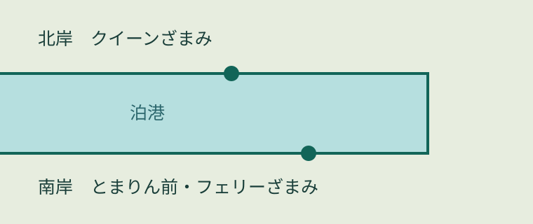
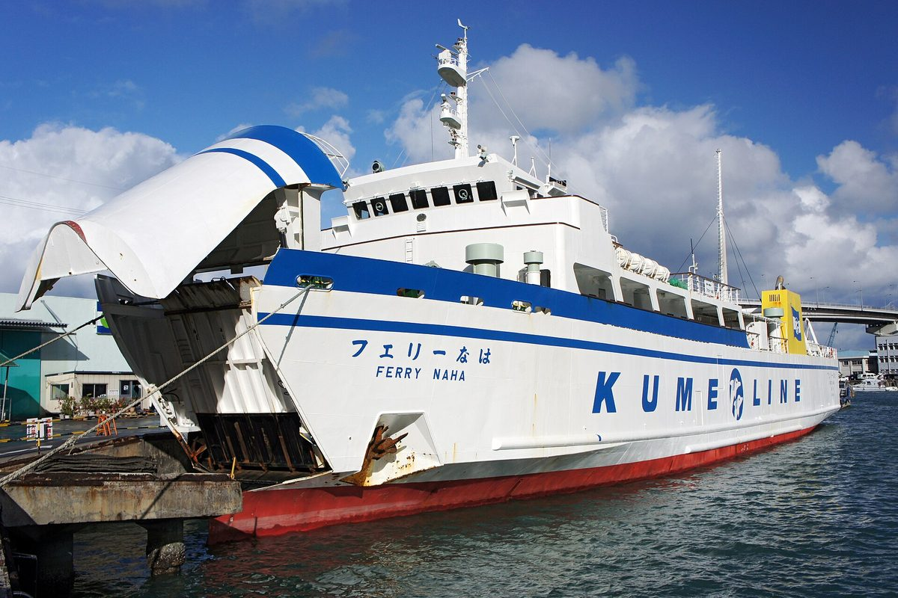

從那霸去座間味，早上怎麼看船有沒有開？
找到你的船名、方向和出發日期
「欠航」是停航，「運航」是行駛。如果公告日期和乘船日不同，當天出門前再確認一次。
看船名，選對碼頭
船票寫「フェリーざまみ」時，找南岸「とまりん」前的乘船處；寫「クイーンざまみ」時，找泊港北岸。先核對當天公告的船名，代船或停航時請依村役場公告。
出發前，先認南岸和北岸


- 從哪裡看
- 從上方看港區，上方是北岸。這張簡圖只表示兩岸的關係。
- 認哪個目印
- 船票上的船名決定要到哪一岸。
- 接下來
- 去南岸找「とまりん」；去北岸時，向司機或路人出示「泊港北岸」。
泊港周邊地圖
地圖標示南岸的「とまりん」大樓。搭高速船時，目的地要選泊港北岸。
用 Google 地圖開啟到了碼頭，在哪裡找船名？



- 從哪裡看
- 從碼頭面向船身的前側。這是泊港其他航線的舊照，用來示範辨認船名的位置。
- 認哪個目印
- 看藍線下方的日文船名。照片裡寫的是「フェリーなは」。
- 接下來
- 把船身或登船口標示的日文和船票逐字對照。前往座間味時，請依當天公告找到自己的船。